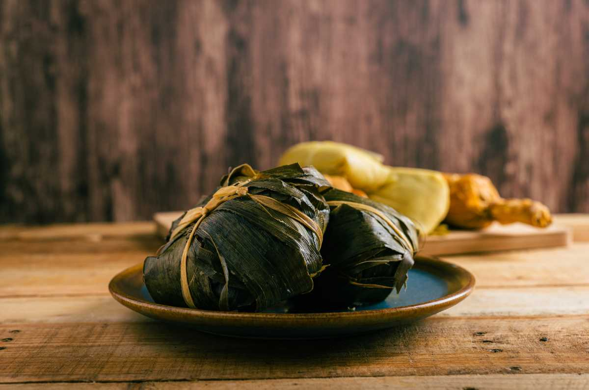

Platillos Tradicionales
Memelas de la región
Un platillo de la región con ingredientes y un sabor único dependiendo de donde lo compres

Pilte ceremonial
Esta es una variante de lo que que se conoce como pilte ya que puede suele ser para celebraciones
Tamales tradicionales
Receta que se ha pasado de generación en generación con la intención de recordar la cultura